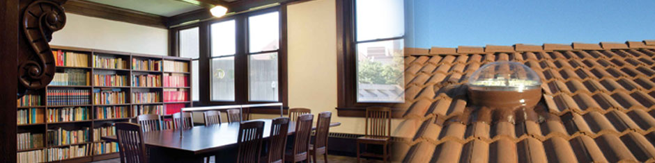
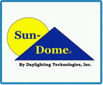

Gulf Concreting Products FZC
Crown Concreting Products LLC
Incorporated in February of 1996, Sun-Dome manufactures high-quality tubular daylighting devices for all types of commercial and residential applications.
The Sun-Dome tubular daylighting device is manufactured with the following basic components:
Other parts are available, such as curb and cap options, troffers, and dimmers.
Sun-Dome units easily withstand exposure to ice, snow and hail in cooler climates. All Sun-Dome units are tested and approved for small & large missile impact under Dade County protocol TAS-201/TAS-202/TAS-203/ ASTM F588-85 (Level 10), Miami-Dade County FL Approval number: NOA-07-0917.03. All units are HVHZ (High Velocity Hurricane Zone) approved. All units meet or exceed the Florida Building Code and comply with the new Florida Product Approval System 9B-72 that came into effect 10/1/03 FBC-#1628.1). The Certification Agency and Quality Assurance Entity for Sun- Dome is Miami-Dade County whose approval is accepted throughout the entire state of Florida as well as in most other states. Sun-Dome is NFRC certified, Minority/Woman
Sun-Dome is NFRC certified, Minority/Woman-owned certified, and an Energy Star Partner. Sun-Dome offers optional units that qualify for Energy Tax Credit. All units manufactured by Sun-Dome are Green Building products.